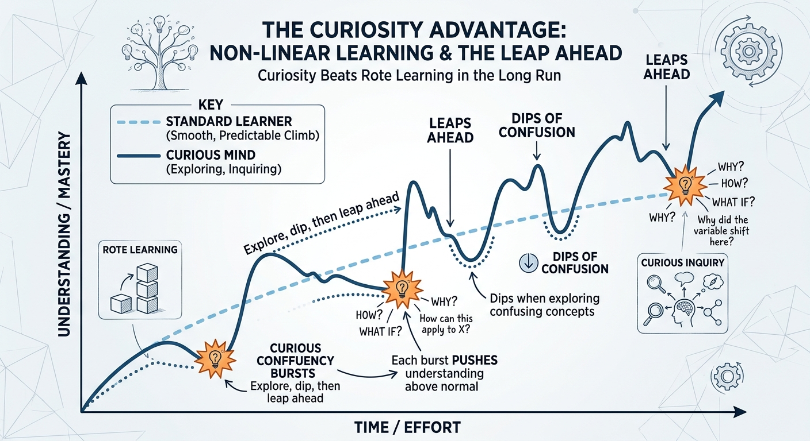
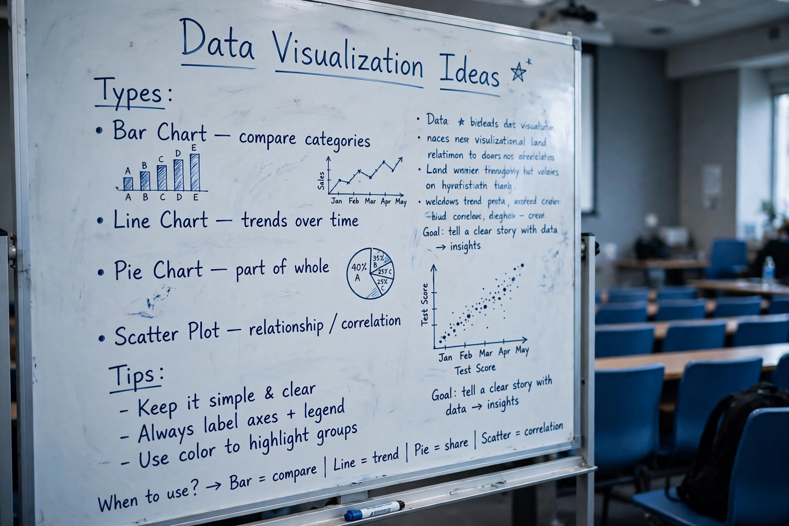

Hello, I'm Eric Mugao.
I am a freelancer with over five years of experience across language services, AI data projects, customer service, and sales. My career has been shaped by curiosity, adaptability, and a commitment to doing work that people can depend on.
My freelancing experience includes transcription, translation, AI annotation, data labeling, and other AI training-related tasks.
I have worked with different platforms on assignments involving AI evaluation, calibration, and specialist tasks.
These experiences have taught me to follow detailed guidelines, pay attention to accuracy, and adapt to different project requirements.

Experience Beyond Freelancing
I have also worked in customer service and sales. In a call centre, I sold airline tickets to customers around the world, developing my communication, listening, and customer-handling skills. My experience as a local door-to-door sales representative taught me how to approach people confidently, understand their needs, explain solutions, and build trust.

Working across these different roles has helped me understand that professional success depends on more than technical ability. It also requires patience, accountability, clear communication, and respect for the people who trust you with their work.
A Self-Taught and Growing Technologist
I developed much of my computer literacy through self-directed learning. When I encounter something unfamiliar, I research it, practise, ask questions where necessary, and keep learning until I can make progress. That mindset has helped me expand my skills and take on new challenges.
I am now building my capabilities in Python development, automation, and practical software solutions. I am still learning and improving, and I enjoy applying that knowledge to projects that solve real problems. I believe that staying curious and willing to learn is an important part of being a useful professional.
What You Can Expect From Me
Reliability: I take commitments seriously and respect agreed deadlines. I plan my work carefully and believe in communicating early if a challenge could affect delivery.
Attention to detail: Whether I am working with language, AI data, or code, I understand that accuracy matters. I aim to follow instructions carefully and deliver work that meets the agreed requirements.
Clear communication: My background in language services, customer service, and sales has taught me to listen, clarify expectations, and communicate professionally.
Adaptability: I am comfortable learning new tools, following project-specific guidelines, and adjusting to different working environments.
Accountability: I welcome constructive feedback, take responsibility for my work, and look for ways to improve. I want clients to feel informed about their projects and confident about the work entrusted to me.
Let's Work Together
I welcome opportunities to work with individuals, businesses, and teams that value quality, consistency, and honest communication. Depending on the project, I can help with transcription, translation, AI data annotation, data labeling, customer support, sales assistance, and Python-related tasks within my current capabilities.
My approach is straightforward: understand what is needed, agree on expectations, respect the timeline, communicate clearly, and do my best to deliver work that meets the required standard.
If you need a freelancer who takes your project seriously, respects your time, and is committed to getting the job done, I would welcome the opportunity to work with you.